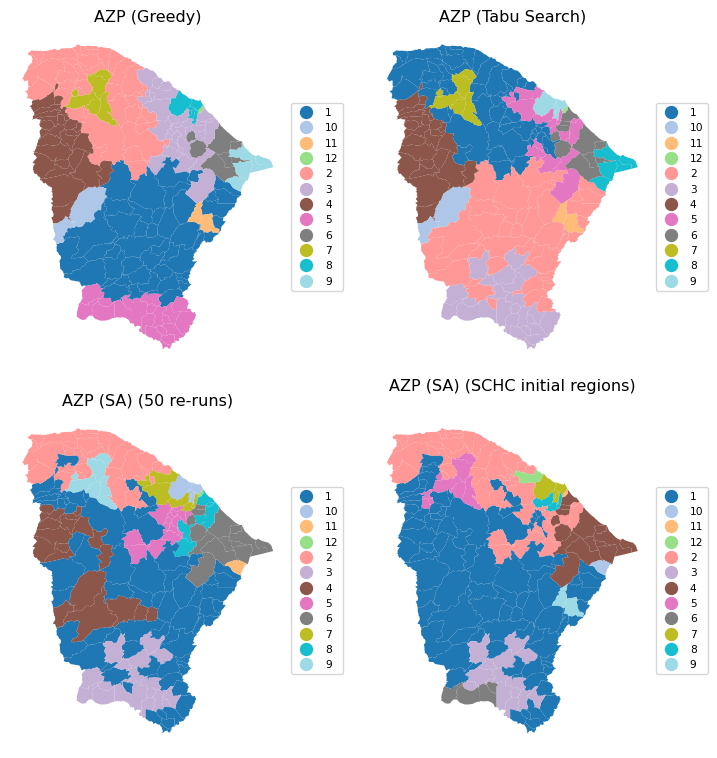
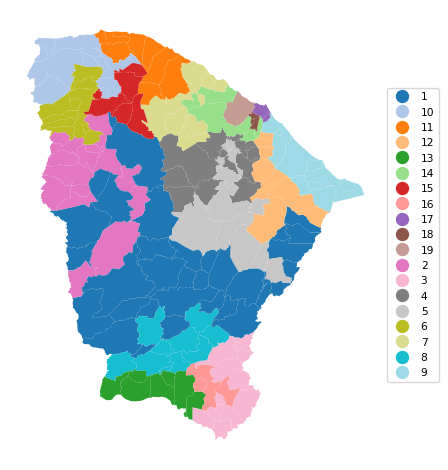

import geopandas as gpd
import numpy as np
import time
from spatial_cluster_helper import ensure_datasets, cluster_stats, \
cluster_fit, cluster_center, cluster_map
import pygeoda13 Spatially Constrained Clustering - Partitioning Methods
In this Chapter, we continue with methods that impose hard spatial constraints in a clustering procedure. We consider two methods that use a partitioning clustering logic: AZP (automatic zoning procedure), Openshaw (1977) ,Openshaw and Rao (1995), and max-p, Duque, Anselin, and Rey (2012). Both are covered in Chapter 11 of the GeoDa Cluster Book.
As in Chapter 12, we need to rely on the functionality from GeoDa that is included in the pygeoda package. We again use the helper functions ensure_datasets, cluster_stats, cluster_center, cluster_fit and cluster_map from the spatial-cluster-helper package. We rely on geopandas and numpy for the basics. As in the previous chapter, we import time to get insight into the performance of the different algorithms.
We continue with the ceara sample data set for the empirical illustration.
Required Packages
geopandas, numpy, pygeoda, spatial-cluster-helper
Required Data Sets
ceara
13.1 Preliminaries
13.1.1 Import Required Modules
13.1.2 Load Data
We load the ceara.shp shape file and do a quick check of its contents. For this sample data, we use the argument encoding = 'utf-8' in the read_file function to account for the special characters in Brazilian Portuguese.
# Setting working folder:
#path = "/your/path/to/data/"
path = "./datasets/"
# Select the Ceará data:
shpfile = "ceara/ceara.shp"
# Load the data:
ensure_datasets(shpfile, folder_path = path)
dfs = gpd.read_file(path + shpfile, encoding = 'utf-8')
print(dfs.shape)
dfs.head(3)(184, 36)| code7 | mun_name | state_init | area_km2 | state_code | micro_code | micro_name | inc_mic_4q | inc_zik_3q | inc_zik_2q | ... | gdp | pop | gdpcap | popdens | zik_1q | ziq_2q | ziq_3q | zika_d | mic_d | geometry | |
|---|---|---|---|---|---|---|---|---|---|---|---|---|---|---|---|---|---|---|---|---|---|
| 0 | 2300101.0 | Abaiara | CE | 180.833 | 23 | 23019 | 19ª Região Brejo Santo | 0.000000 | 0.0 | 0.00 | ... | 35974.0 | 10496.0 | 3.427 | 58.043 | 0.0 | 0.0 | 0.0 | 0.0 | 0.0 | POLYGON ((5433729.65 9186242.97, 5433688.546 9... |
| 1 | 2300150.0 | Acarape | CE | 130.002 | 23 | 23003 | 3ª Região Maracanaú | 6.380399 | 0.0 | 0.00 | ... | 68314.0 | 15338.0 | 4.454 | 117.983 | 0.0 | 0.0 | 0.0 | 0.0 | 1.0 | POLYGON ((5476916.288 9533405.667, 5476798.561... |
| 2 | 2300200.0 | Acaraú | CE | 842.471 | 23 | 23012 | 12ª Região Acaraú | 0.000000 | 0.0 | 1.63 | ... | 309490.0 | 57551.0 | 5.378 | 68.312 | 0.0 | 1.0 | 0.0 | 1.0 | 0.0 | POLYGON ((5294389.783 9689469.144, 5294494.499... |
3 rows × 36 columns
# the full set of variables
print(list(dfs.columns))['code7', 'mun_name', 'state_init', 'area_km2', 'state_code', 'micro_code', 'micro_name', 'inc_mic_4q', 'inc_zik_3q', 'inc_zik_2q', 'inc_zik_1q', 'prim_care', 'ln_gdp', 'ln_pop', 'mobility', 'environ', 'housing', 'sanitation', 'infra', 'acu_zik_1q', 'acu_zik_2q', 'acu_zik_3q', 'pop_zikv', 'acu_mic_4q', 'pop_micro', 'lngdpcap', 'gdp', 'pop', 'gdpcap', 'popdens', 'zik_1q', 'ziq_2q', 'ziq_3q', 'zika_d', 'mic_d', 'geometry']13.1.3 Variables
We continue to use the same set of variables to replicate the empirical illustration in Chapter 11 of the GeoDa Cluster Book, as listed in Table 12.1. As before, we specify the variables in the varlist list for later use.
varlist = ['mobility', 'environ', 'housing', 'sanitation', 'infra', 'gdpcap']13.1.4 Pygeoda Data Preparation
We follow the same steps as in Chapter 12 to set up a data set in the pygeoda internal format as ceara_g and to create queen contiguity spatial weights (queen_w).
ceara_g = pygeoda.open(dfs)
queen_w = pygeoda.queen_weights(ceara_g)
queen_wWeights Meta-data:
number of observations: 184
is symmetric: True
sparsity: 0.02953686200378072
# min neighbors: 1
# max neighbors: 13
# mean neighbors: 5.434782608695652
# median neighbors: 5.0
has isolates: FalseAs in the previous Chapter, we create subsets with the relevant variables in both the pygeoda format (data_g) and as a GeoDataFrame (data).
data_g = ceara_g[varlist]
data = dfs[varlist]We set the number of clusters to 12.
n_clusters = 1213.2 AZP
The first spatially constrained partitioning method we consider is AZP. It is contained in pygeoda, which uses the same underlying code as GeoDa, except for some technical implementations related to memory management. Even though these differences are very low-level, they can influence the way the heuristic proceeds, since it moves sequentially through alternative configurations. The order in which these sequences are considered matters, and slight differences in the memory allocation can produce different results.
As a consequence, it is not possible to completely replicate the results from Chapter 11 in the GeoDa Cluster Book, given the differences between the low-level implementations in C++ and in Python. This is a general feature of any heuristic, where not only the algorithms matter, but also seemingly unrelated issues such as starting points, random numbers and the particular ordering of moves.
AZP is implemented as three different functions, corresponding to the greedy, tabu and simulated annealing optimization approaches (see Chapter 11 in the GeoDa Cluster Book for technical details). The matching functions are azp_greedy, azp_tabu, and azp_sa. Required arguments are the number of clusters, the spatial weights and the pygeoda data object.
13.2.1 AZP-Greedy
The first example uses greedy search, implemented in azp_greedy. We use the same approach as in the previous Chapter and employ the helper functions cluster_stats, cluster_fit, cluster_center and cluster_map to list the properties of the clusters (see Chapter 12 for technical details).
t0 = time.time()
ceara_clusters1 = pygeoda.azp_greedy(n_clusters, queen_w, data_g)
t1 = time.time()
tazp1 = t1 - t0
print("AZP Greedy Clustering Time: ", tazp1)
cluster_labels1 = np.array(ceara_clusters1['Clusters'])
c_stats = cluster_stats(cluster_labels1)
fit = cluster_fit(data, cluster_labels1, n_clusters,
correct = True, printopt = True)
clust_means, clust_medians = cluster_center(data, cluster_labels1)
print("Cluster Means:\n", np.round(clust_means, 3))
print("\nCluster Medians:\n", np.round(clust_medians, 3))AZP Greedy Clustering Time: 0.03095412254333496
Labels Cardinality
1 46
2 37
3 29
4 25
5 21
6 7
7 5
8 5
9 4
10 2
11 2
12 1
Total Sum of Squares (TSS): 1098.0
Within-cluster Sum of Squares (WSS) for each cluster: [124.036 115.162 139.302 71.455 105.922 16.194 16.279 26.967 53.98
2.921 16.99 0. ]
Total Within-cluster Sum of Squares (WSS): 689.208
Between-cluster Sum of Squares (BSS): 408.792
Ratio of BSS to TSS: 0.372
Cluster Means:
mobility environ housing sanitation infra gdpcap
cluster
1 0.965 0.883 0.852 0.686 0.552 4.524
2 0.959 0.864 0.800 0.603 0.513 4.490
3 0.946 0.814 0.798 0.592 0.469 6.265
4 0.960 0.883 0.852 0.629 0.528 4.591
5 0.960 0.797 0.826 0.646 0.512 4.679
6 0.942 0.924 0.846 0.573 0.391 5.208
7 0.982 0.939 0.839 0.833 0.612 5.691
8 0.833 0.750 0.800 0.743 0.537 11.102
9 0.944 0.897 0.841 0.593 0.405 16.482
10 0.960 0.930 0.900 0.641 0.424 4.170
11 0.974 0.657 0.781 0.823 0.693 5.432
12 0.936 0.789 0.794 0.545 0.425 27.625
Cluster Medians:
mobility environ housing sanitation infra gdpcap
cluster
1 0.968 0.888 0.849 0.677 0.560 4.220
2 0.959 0.885 0.801 0.581 0.505 4.140
3 0.948 0.824 0.807 0.573 0.470 4.742
4 0.968 0.896 0.851 0.602 0.534 4.395
5 0.963 0.805 0.831 0.636 0.514 4.140
6 0.935 0.943 0.842 0.575 0.377 5.114
7 0.983 0.932 0.829 0.798 0.606 4.099
8 0.834 0.741 0.823 0.784 0.561 7.982
9 0.957 0.882 0.846 0.590 0.419 9.262
10 0.960 0.930 0.900 0.641 0.424 4.170
11 0.974 0.657 0.781 0.823 0.693 5.432
12 0.936 0.789 0.794 0.545 0.425 27.625# Plot the clusters
cluster_map(dfs, cluster_labels1, figsize = (4, 4),
title = "", cmap = 'tab20',legend_fontsize=8)13.2.2 AZP-Tabu
The Tabu algorithm for AZP is invoked with azp_tabu. In addition to the same arguments as for the basic AZP function, a tabu_length is required (the size of the tabu list of observations for which a swap is not possible), as well as the maximum number of non-improving moves, conv_tabu. In our illustration, these are set to respectively 50 and 25, as in Chapter 11 of the GeoDa Cluster Book. We use the same set of commands as before.
t0 = time.time()
ceara_clusters2 = pygeoda.azp_tabu(n_clusters, queen_w, data_g,
tabu_length = 50, conv_tabu = 25)
t1 = time.time()
tazp2 = t1 - t0
print("AZP Tabu Clustering Time: ", tazp2)
cluster_labels2 = np.array(ceara_clusters2['Clusters'])
c_stats = cluster_stats(cluster_labels2)
fit = cluster_fit(data, cluster_labels2, n_clusters,
correct = True, printopt = True)
clust_means, clust_medians = cluster_center(data, cluster_labels2)
print("Cluster Means:\n", np.round(clust_means, 3))
print("\nCluster Medians:\n", np.round(clust_medians, 3))AZP Tabu Clustering Time: 0.36464381217956543
Labels Cardinality
1 50
2 41
3 26
4 25
5 14
6 10
7 5
8 4
9 4
10 2
11 2
12 1
Total Sum of Squares (TSS): 1098.0
Within-cluster Sum of Squares (WSS) for each cluster: [155.14 119.919 97.683 71.455 78.79 34.08 16.279 53.98 11.088
2.921 16.99 0. ]
Total Within-cluster Sum of Squares (WSS): 658.326
Between-cluster Sum of Squares (BSS): 439.674
Ratio of BSS to TSS: 0.4
Cluster Means:
mobility environ housing sanitation infra gdpcap
cluster
1 0.959 0.860 0.803 0.608 0.502 4.575
2 0.968 0.904 0.849 0.693 0.538 4.533
3 0.956 0.780 0.835 0.644 0.542 4.636
4 0.960 0.883 0.852 0.629 0.528 4.591
5 0.922 0.759 0.779 0.580 0.465 6.315
6 0.947 0.909 0.834 0.550 0.409 7.222
7 0.982 0.939 0.839 0.833 0.612 5.691
8 0.944 0.897 0.841 0.593 0.405 16.482
9 0.833 0.766 0.818 0.792 0.574 12.600
10 0.960 0.930 0.900 0.641 0.424 4.170
11 0.974 0.657 0.781 0.823 0.693 5.432
12 0.936 0.789 0.794 0.545 0.425 27.625
Cluster Medians:
mobility environ housing sanitation infra gdpcap
cluster
1 0.957 0.878 0.808 0.581 0.495 4.322
2 0.970 0.902 0.844 0.680 0.542 4.242
3 0.960 0.774 0.838 0.630 0.564 4.134
4 0.968 0.896 0.851 0.602 0.534 4.395
5 0.933 0.763 0.785 0.581 0.458 4.802
6 0.949 0.911 0.836 0.535 0.382 5.281
7 0.983 0.932 0.829 0.798 0.606 4.099
8 0.957 0.882 0.846 0.590 0.419 9.262
9 0.835 0.766 0.824 0.799 0.583 11.557
10 0.960 0.930 0.900 0.641 0.424 4.170
11 0.974 0.657 0.781 0.823 0.693 5.432
12 0.936 0.789 0.794 0.545 0.425 27.625# Plot the clusters
cluster_map(dfs, cluster_labels2, figsize=(4, 4),
title = "", cmap = 'tab20',legend_fontsize=8)13.2.3 AZP-Simulated Annealing
The simulated annealing algorithm for AZP is invoked with azp_sa. In addition to the same arguments as for the basic AZP function, a cooling_rate is required (the rate at which the simulated annealing temperature is allowed to decrease), as well as the maximum number of iterations allowed for each swap, sa_maxit. In our illustration, these are set to, respectively, 0.8 and 5. We use the same set of functions as before.
Note that the results differ slightly from the ones reported in Chapter 11 of the GeoDa Cluster Book even though the parameters are the same.
t0 = time.time()
ceara_clusters3 = pygeoda.azp_sa(n_clusters, queen_w, data_g,
cooling_rate = 0.8, sa_maxit = 5)
t1 = time.time()
tazp3 = t1 - t0
print("AZP SA Clustering Time: ", tazp3)
cluster_labels3 = np.array(ceara_clusters3['Clusters'])
c_stats = cluster_stats(cluster_labels3)
fit = cluster_fit(data, cluster_labels3, n_clusters,
correct = True, printopt = True)
clust_means, clust_medians = cluster_center(data, cluster_labels3)
print("Cluster Means:\n", np.round(clust_means, 3))
print("\nCluster Medians:\n", np.round(clust_medians, 3))AZP SA Clustering Time: 3.248257637023926
Labels Cardinality
1 71
2 33
3 28
4 19
5 12
6 5
7 5
8 4
9 2
10 2
11 2
12 1
Total Sum of Squares (TSS): 1098.0
Within-cluster Sum of Squares (WSS) for each cluster: [204.08 101.845 129.825 50.521 41.189 7.637 26.967 53.98 2.921
1.109 16.99 0. ]
Total Within-cluster Sum of Squares (WSS): 637.065
Between-cluster Sum of Squares (BSS): 460.935
Ratio of BSS to TSS: 0.42
Cluster Means:
mobility environ housing sanitation infra gdpcap
cluster
1 0.965 0.903 0.847 0.674 0.533 4.621
2 0.958 0.860 0.795 0.586 0.505 4.473
3 0.938 0.816 0.802 0.565 0.453 6.141
4 0.953 0.732 0.834 0.615 0.545 4.734
5 0.981 0.879 0.848 0.748 0.594 5.154
6 0.974 0.896 0.831 0.746 0.452 5.363
7 0.833 0.750 0.800 0.743 0.537 11.102
8 0.944 0.897 0.841 0.593 0.405 16.482
9 0.960 0.930 0.900 0.641 0.424 4.170
10 0.917 0.921 0.829 0.562 0.369 3.810
11 0.974 0.657 0.781 0.823 0.693 5.432
12 0.936 0.789 0.794 0.545 0.425 27.625
Cluster Medians:
mobility environ housing sanitation infra gdpcap
cluster
1 0.968 0.905 0.846 0.671 0.526 4.319
2 0.959 0.883 0.800 0.571 0.498 4.140
3 0.940 0.811 0.808 0.567 0.464 4.738
4 0.958 0.720 0.833 0.608 0.563 4.140
5 0.984 0.909 0.851 0.752 0.584 4.234
6 0.983 0.906 0.836 0.775 0.409 4.985
7 0.834 0.741 0.823 0.784 0.561 7.982
8 0.957 0.882 0.846 0.590 0.419 9.262
9 0.960 0.930 0.900 0.641 0.424 4.170
10 0.917 0.921 0.829 0.562 0.369 3.810
11 0.974 0.657 0.781 0.823 0.693 5.432
12 0.936 0.789 0.794 0.545 0.425 27.625# Plot the clusters
cluster_map(dfs, cluster_labels3, figsize = (4, 4),
title = "", cmap = 'tab20',legend_fontsize=8)13.2.4 ARiSel
As in K-means, an alternative to a random initial feasible solution is to use a k-means++ like logic. This is implemented in the ARiSel approach, through the additional inits argument to any azp function. In the example below, we set inits = 50. We use azp_sa with a cooling_rate of 0.8 and sa_maxit as 5.
t0 = time.time()
ceara_clusters4 = pygeoda.azp_sa(n_clusters, queen_w, data_g,
cooling_rate = 0.8, sa_maxit = 5, inits = 50)
t1 = time.time()
tazp4 = t1 - t0
print("AZP ARiSel Clustering Time: ", tazp4)
cluster_labels4 = np.array(ceara_clusters4['Clusters'])
c_stats = cluster_stats(cluster_labels4)
fit = cluster_fit(data, cluster_labels4, n_clusters,
correct = True, printopt = True)
clust_means, clust_medians = cluster_center(data, cluster_labels4)
print("Cluster Means:\n", np.round(clust_means, 3))
print("\nCluster Medians:\n", np.round(clust_medians, 3))AZP ARiSel Clustering Time: 5.351151943206787
Labels Cardinality
1 67
2 29
3 19
4 19
5 14
6 13
7 6
8 6
9 5
10 4
11 1
12 1
Total Sum of Squares (TSS): 1098.0
Within-cluster Sum of Squares (WSS) for each cluster: [224.399 88.688 50.521 51.732 48.429 44.554 39.958 8.893 16.279
11.088 0. 0. ]
Total Within-cluster Sum of Squares (WSS): 584.54
Between-cluster Sum of Squares (BSS): 513.46
Ratio of BSS to TSS: 0.468
Cluster Means:
mobility environ housing sanitation infra gdpcap
cluster
1 0.968 0.888 0.844 0.692 0.552 4.663
2 0.954 0.858 0.795 0.586 0.510 4.513
3 0.953 0.732 0.834 0.615 0.545 4.734
4 0.956 0.897 0.855 0.604 0.480 4.272
5 0.960 0.821 0.806 0.644 0.464 4.450
6 0.944 0.883 0.842 0.574 0.416 7.300
7 0.902 0.772 0.748 0.615 0.447 8.392
8 0.939 0.834 0.783 0.486 0.454 5.613
9 0.982 0.939 0.839 0.833 0.612 5.691
10 0.833 0.766 0.818 0.792 0.574 12.600
11 0.957 0.966 0.857 0.593 0.357 40.018
12 0.936 0.789 0.794 0.545 0.425 27.625
Cluster Medians:
mobility environ housing sanitation infra gdpcap
cluster
1 0.970 0.898 0.845 0.678 0.551 4.390
2 0.952 0.883 0.792 0.564 0.498 4.183
3 0.958 0.720 0.833 0.608 0.563 4.140
4 0.964 0.896 0.851 0.585 0.491 4.097
5 0.959 0.835 0.812 0.618 0.469 4.355
6 0.951 0.896 0.836 0.579 0.424 6.171
7 0.905 0.779 0.750 0.605 0.444 5.140
8 0.939 0.840 0.790 0.494 0.468 4.802
9 0.983 0.932 0.829 0.798 0.606 4.099
10 0.835 0.766 0.824 0.799 0.583 11.557
11 0.957 0.966 0.857 0.593 0.357 40.018
12 0.936 0.789 0.794 0.545 0.425 27.625cluster_map(dfs, cluster_labels4, figsize=(4, 4),
title = "", cmap = 'tab20',legend_fontsize=8)13.2.5 AZP with Initial Clustering Result
As mentioned in the discussion of hierarchical spatially constrained solutions in Chapter 12, one of the drawbacks of those methods is that observations tend to be trapped in a branch of the dendrogram or minimum spanning tree. Since AZP implements swapping of observations, we can use the endpoint of one of the hierarchical methods as the feasible initial solution for AZP. In many instances (but not all), this improves on the hierarchical solution and sometimes also obtains better solutions than straight AZP.
In all these illustrations, it is important to keep in mind the sensitivity of the results to the various tuning parameters (which are under the analyst’s control) as well as hardware implementations (which are not).
We illustrate this approach by using the end solution of SCHC as the initial solution for AZP, set by means of the init_regions argument.
ceara_clusters = pygeoda.schc(n_clusters, queen_w, data_g, "ward")
schc_cluster_labels = ceara_clusters['Clusters']
t0 = time.time()
ceara_clusters5 = pygeoda.azp_sa(n_clusters, queen_w, data_g,
cooling_rate = 0.8, sa_maxit = 5,
init_regions = schc_cluster_labels)
t1 = time.time()
tazp5 = t1 - t0
print("AZP-SCHC Clustering Time: ", tazp5)
cluster_labels5 = np.array(ceara_clusters5['Clusters'])
c_stats = cluster_stats(cluster_labels5)
fit = cluster_fit(data, cluster_labels5, n_clusters,
correct = True, printopt = True)
clust_means, clust_medians = cluster_center(data, cluster_labels5)
print("Cluster Means:\n", np.round(clust_means, 3))
print("\nCluster Medians:\n", np.round(clust_medians, 3))AZP-SCHC Clustering Time: 3.6895642280578613
Labels Cardinality
1 88
2 43
3 15
4 14
5 8
6 4
7 4
8 3
9 2
10 1
11 1
12 1
Total Sum of Squares (TSS): 1098.0
Within-cluster Sum of Squares (WSS) for each cluster: [246.863 134.79 30.167 49.716 31.033 14.614 11.088 5.956 16.99
0. 0. 0. ]
Total Within-cluster Sum of Squares (WSS): 541.218
Between-cluster Sum of Squares (BSS): 556.782
Ratio of BSS to TSS: 0.507
Cluster Means:
mobility environ housing sanitation infra gdpcap
cluster
1 0.964 0.895 0.847 0.670 0.526 4.600
2 0.950 0.836 0.790 0.578 0.494 4.460
3 0.952 0.719 0.842 0.625 0.575 4.887
4 0.944 0.883 0.837 0.563 0.414 7.450
5 0.984 0.896 0.845 0.786 0.613 5.042
6 0.968 0.835 0.784 0.578 0.413 4.327
7 0.833 0.766 0.818 0.792 0.574 12.600
8 0.874 0.711 0.742 0.612 0.420 5.307
9 0.974 0.657 0.781 0.823 0.693 5.432
10 0.957 0.966 0.857 0.593 0.357 40.018
11 0.936 0.789 0.794 0.545 0.425 27.625
12 0.951 0.824 0.771 0.573 0.443 25.464
Cluster Medians:
mobility environ housing sanitation infra gdpcap
cluster
1 0.968 0.896 0.846 0.669 0.523 4.380
2 0.950 0.859 0.791 0.562 0.490 4.229
3 0.950 0.709 0.845 0.608 0.569 3.923
4 0.949 0.889 0.836 0.577 0.419 6.778
5 0.986 0.924 0.844 0.798 0.616 3.992
6 0.966 0.829 0.784 0.604 0.439 4.299
7 0.835 0.766 0.824 0.799 0.583 11.557
8 0.885 0.687 0.730 0.622 0.427 5.110
9 0.974 0.657 0.781 0.823 0.693 5.432
10 0.957 0.966 0.857 0.593 0.357 40.018
11 0.936 0.789 0.794 0.545 0.425 27.625
12 0.951 0.824 0.771 0.573 0.443 25.464cluster_map(dfs, cluster_labels5, figsize=(4, 4),
title = "", cmap = 'tab20',legend_fontsize=8)13.2.6 Comparing AZP Implementations
To close the discussion of AZP, we provide a brief summary of the spatial layout and measure of fit for the greedy algorithm, the tabu search, and two simulated annealing results, one with 50 initial re-runs and one using SCHC as the starting point. The latter solution clearly achieves the highest BSS/TSS ratio.
# Comparing the results, except the basic AZP (SA)
titles = ["AZP (Greedy)", "AZP (Tabu Search)",
"AZP (SA) (50 re-runs)", "AZP (SA) (SCHC initial regions)"]
cluster_map(dfs, [cluster_labels1, cluster_labels2, cluster_labels4,
cluster_labels5],
title = titles, cmap = 'tab20',
grid_shape = (2, 2), figsize = (8, 8),legend_fontsize=8)

ceara_clusters = [ceara_clusters1, ceara_clusters2,
ceara_clusters4, ceara_clusters5]
print("The ratio of between to total sum of squares:")
for i, cluster in enumerate(ceara_clusters):
print(titles[i],
f": {np.round(cluster['The ratio of between to total sum of squares'],
4)}")The ratio of between to total sum of squares:
AZP (Greedy) : 0.3723
AZP (Tabu Search) : 0.4004
AZP (SA) (50 re-runs) : 0.4676
AZP (SA) (SCHC initial regions) : 0.507113.3 Max-p Regions
Up to this point, we had to specify the number of clusters beforehand as the first argument to be passed to the pygeoda clustering routines. The max-p approach takes a different perspective. It attempts to find the largest number of clusters possible (the max p) within a given constraint on the cluster size. Without such a constraint, the solution would always equal the number of observations.
The minimum cluster size, or min_bound is typically a function of the total for a spatially extensive variable, like population or total number of housing units. However, it can be set differently as well. Keep in mind that the larger the minimum bound, the smaller the number of clusters that will be found, and the other way around. When the minimum size is not determined by some fixed policy criterion, it may therefore be good to do some experimentation.
The max-p algorithm is essentially AZP applied to an initial feasible solution that follows a heuristic to maximize the number of regions that satisfy the minimum bounds constraint. As before, several random starting points should be explored as the results are quite sensitive to this initial solution.
We illustrate max-p for the Ceará example using simulated annealing with the min_bound set to a percentage of the total population. As for AZP, three functions are available, maxp_greedy, maxp_tabu and maxp_sa. The AZP-related arguments are the same as for the core AZP functions. The n_clusters argument is (obviously) no longer needed. Instead, the bound_variable defines the spatially extensive variable for the minimum constraint, and min_bound sets its actual value. Here, we take 'pop' as the variable (from the geodataframe), and compute the percentage for the bound using sum() multiplied by a fraction.
In the first example, we use maxp_greedy with a population minimum of 10% of the total, or 845,238. This yields a solution with 6 clusters, achieving a miserable BSS/TSS of 0.26.
t0 = time.time()
ceara_clusters6 = pygeoda.maxp_greedy(queen_w, data_g,
bound_variable = dfs['pop'],
min_bound = dfs['pop'].sum()*0.1)
t1 = time.time()
tmaxp1 = t1 - t0
print("Max-p (10%) Clustering Time: ", tmaxp1)
cluster_labels6 = np.array(ceara_clusters6['Clusters'])
c_stats = cluster_stats(cluster_labels6)
fit = cluster_fit(data, cluster_labels6, n_clusters,
correct = True, printopt = True)
clust_means, clust_medians = cluster_center(data, cluster_labels6)
print("Cluster Means:\n", np.round(clust_means, 3))
print("\nCluster Medians:\n", np.round(clust_medians, 3))Max-p (10%) Clustering Time: 0.12100005149841309
Labels Cardinality
1 64
2 45
3 35
4 30
5 8
6 2
Total Sum of Squares (TSS): 1098.0
Within-cluster Sum of Squares (WSS) for each cluster: [283.714 150.575 190.247 103.556 69.006 15.465]
Total Within-cluster Sum of Squares (WSS): 812.563
Between-cluster Sum of Squares (BSS): 285.437
Ratio of BSS to TSS: 0.26
Cluster Means:
mobility environ housing sanitation infra gdpcap
cluster
1 0.964 0.847 0.841 0.673 0.545 4.521
2 0.951 0.844 0.792 0.577 0.494 5.009
3 0.951 0.892 0.850 0.644 0.456 6.236
4 0.974 0.878 0.841 0.657 0.554 4.818
5 0.871 0.759 0.777 0.682 0.490 10.228
6 0.891 0.806 0.809 0.680 0.515 21.378
Cluster Medians:
mobility environ housing sanitation infra gdpcap
cluster
1 0.965 0.875 0.843 0.661 0.556 4.202
2 0.950 0.862 0.793 0.562 0.490 4.386
3 0.957 0.896 0.850 0.613 0.452 4.985
4 0.978 0.893 0.849 0.620 0.550 4.436
5 0.866 0.750 0.777 0.680 0.471 7.154
6 0.891 0.806 0.809 0.680 0.515 21.378cluster_map(dfs, cluster_labels6, figsize=(4, 4),
title = "", cmap = 'tab20',legend_fontsize=8)13.3.1 Sensitivity Analysis
The importance of sensitivity analysis for max-p cannot be understated. To illustrate the different outcomes that can be obtained by tuning the various parameters, we give two examples using simulated annealing with a minimum bound of 5% and 3% respectively.
We first consider 5%, i.e., a population minimum of 422,619. We set the number of iterations (iterations) to 9999, use a cooling rate of 0.9 and maxit of 5. Note that this achieves a p of 13, compared to 12 in Figure 11.28 for GeoDa, but the BSS/TSS ratio is 0.321, relative to 0.385 in GeoDa.
t0 = time.time()
ceara_clusters7 = pygeoda.maxp_sa(queen_w, data_g,
bound_variable = dfs['pop'],
min_bound = dfs['pop'].sum()*0.05,
iterations = 9999,
cooling_rate = 0.9,
sa_maxit = 5)
t1 = time.time()
tmaxp2 = t1 - t0
print("Max-p (5%) Clustering Time: ", tmaxp2)
cluster_labels7 = np.array(ceara_clusters7['Clusters'])
c_stats = cluster_stats(cluster_labels7)
fit = cluster_fit(data, cluster_labels7, n_clusters,
correct = True, printopt = True)
clust_means, clust_medians = cluster_center(data, cluster_labels7)
print("Cluster Means:\n", np.round(clust_means, 3))
print("\nCluster Medians:\n", np.round(clust_medians, 3))Max-p (5%) Clustering Time: 7.94816780090332
Labels Cardinality
1 24
2 23
3 20
4 19
5 18
6 18
7 17
8 14
9 11
10 8
11 7
12 3
13 2
Total Sum of Squares (TSS): 1098.0
Within-cluster Sum of Squares (WSS) for each cluster: [ 74.807 83.702 32.777 95.473 65.341 69.935 44.14 103.769 42.53
36.253 68.153 26.218 2.151]
Total Within-cluster Sum of Squares (WSS): 745.247
Between-cluster Sum of Squares (BSS): 352.753
Ratio of BSS to TSS: 0.321
Cluster Means:
mobility environ housing sanitation infra gdpcap
cluster
1 0.959 0.875 0.845 0.618 0.484 4.593
2 0.963 0.831 0.832 0.614 0.487 4.154
3 0.961 0.907 0.847 0.723 0.548 4.552
4 0.965 0.817 0.846 0.682 0.597 4.648
5 0.941 0.826 0.793 0.616 0.483 4.490
6 0.966 0.811 0.808 0.610 0.540 4.227
7 0.958 0.908 0.809 0.593 0.527 5.050
8 0.946 0.911 0.846 0.580 0.415 9.707
9 0.973 0.908 0.837 0.738 0.570 5.209
10 0.965 0.849 0.839 0.716 0.548 5.356
11 0.906 0.763 0.776 0.568 0.439 10.761
12 0.889 0.764 0.783 0.651 0.456 13.360
13 0.835 0.807 0.826 0.838 0.619 11.404
Cluster Medians:
mobility environ housing sanitation infra gdpcap
cluster
1 0.964 0.870 0.845 0.586 0.495 4.431
2 0.964 0.837 0.827 0.602 0.510 4.058
3 0.965 0.900 0.845 0.708 0.542 4.444
4 0.968 0.855 0.851 0.644 0.590 4.338
5 0.940 0.825 0.793 0.588 0.479 4.342
6 0.972 0.835 0.810 0.579 0.554 3.992
7 0.954 0.900 0.807 0.594 0.505 4.649
8 0.956 0.914 0.839 0.583 0.419 7.266
9 0.976 0.928 0.845 0.756 0.574 4.394
10 0.964 0.931 0.838 0.680 0.578 4.864
11 0.931 0.773 0.788 0.545 0.425 5.110
12 0.903 0.758 0.783 0.669 0.443 7.982
13 0.835 0.807 0.826 0.838 0.619 11.404cluster_map(dfs, cluster_labels7, figsize=(4, 4),
title = "", cmap = 'tab20',legend_fontsize=8)In the final example, we set the population minimum to 3%, or 253,571, with the same SA parameters. This yields 19 clusters, with a BSS/TSS ratio of 0.436, similar to the solution obtained with GeoDa (0.439). This again highlights the importance of experimentation with the various parameters.
t0 = time.time()
ceara_clusters8 = pygeoda.maxp_sa(queen_w, data_g,
bound_variable = dfs['pop'],
min_bound = dfs['pop'].sum()*0.03,
iterations = 9999,
cooling_rate = 0.9,
sa_maxit = 5)
t1 = time.time()
tmaxp3 = t1 - t0
print("Max-p (3%) Clustering Time: ", tmaxp3)
cluster_labels8 = np.array(ceara_clusters8['Clusters'])
c_stats = cluster_stats(cluster_labels8)
fit = cluster_fit(data, cluster_labels8, n_clusters,
correct = True, printopt = True)
clust_means, clust_medians = cluster_center(data, cluster_labels8)
print("Cluster Means:\n", np.round(clust_means, 3))
print("\nCluster Medians:\n", np.round(clust_medians, 3))Max-p (3%) Clustering Time: 10.129745960235596
Labels Cardinality
1 33
2 16
3 14
4 13
5 12
6 12
7 12
8 10
9 10
10 10
11 8
12 7
13 7
14 6
15 5
16 4
17 2
18 2
19 1
Total Sum of Squares (TSS): 1098.0
Within-cluster Sum of Squares (WSS) for each cluster: [71.542 43.964 51.354 35.693 57.527 25.585 33.225 20.233 26.853 31.334
15.088 84.027 28.591 39.958 16.279 6.894 15.465 5.476 0. ]
Total Within-cluster Sum of Squares (WSS): 609.089
Between-cluster Sum of Squares (BSS): 488.911
Ratio of BSS to TSS: 0.445
Cluster Means:
mobility environ housing sanitation infra gdpcap
cluster
1 0.963 0.904 0.853 0.703 0.543 4.539
2 0.955 0.896 0.853 0.589 0.474 4.279
3 0.972 0.909 0.840 0.675 0.528 4.158
4 0.952 0.825 0.795 0.595 0.458 4.129
5 0.972 0.830 0.826 0.738 0.537 5.244
6 0.974 0.861 0.846 0.653 0.572 4.743
7 0.954 0.887 0.805 0.612 0.550 5.068
8 0.952 0.761 0.849 0.626 0.579 4.278
9 0.938 0.876 0.825 0.526 0.418 6.738
10 0.956 0.784 0.776 0.571 0.509 4.188
11 0.956 0.914 0.810 0.582 0.482 4.655
12 0.949 0.865 0.836 0.576 0.425 12.688
13 0.967 0.783 0.807 0.611 0.471 5.202
14 0.902 0.772 0.748 0.615 0.447 8.392
15 0.982 0.939 0.839 0.833 0.612 5.691
16 0.939 0.666 0.838 0.618 0.567 4.999
17 0.891 0.806 0.809 0.680 0.515 21.378
18 0.836 0.766 0.827 0.822 0.597 13.644
19 0.814 0.709 0.795 0.710 0.497 7.982
Cluster Medians:
mobility environ housing sanitation infra gdpcap
cluster
1 0.966 0.905 0.856 0.698 0.543 4.390
2 0.964 0.896 0.851 0.577 0.461 4.208
3 0.974 0.918 0.835 0.635 0.518 3.993
4 0.954 0.827 0.810 0.568 0.467 4.229
5 0.971 0.861 0.838 0.777 0.525 5.160
6 0.980 0.878 0.852 0.634 0.562 4.387
7 0.950 0.887 0.804 0.598 0.552 4.635
8 0.950 0.774 0.853 0.617 0.580 3.888
9 0.940 0.870 0.827 0.510 0.419 6.024
10 0.963 0.765 0.782 0.554 0.518 3.978
11 0.956 0.928 0.810 0.566 0.483 4.659
12 0.957 0.882 0.836 0.575 0.434 7.957
13 0.965 0.736 0.805 0.638 0.491 4.313
14 0.905 0.779 0.750 0.605 0.444 5.140
15 0.983 0.932 0.829 0.798 0.606 4.099
16 0.939 0.664 0.832 0.595 0.590 4.276
17 0.891 0.806 0.809 0.680 0.515 21.378
18 0.836 0.766 0.827 0.822 0.597 13.644
19 0.814 0.709 0.795 0.710 0.497 7.982cluster_map(dfs, cluster_labels8, figsize = (5, 5),
title = "", cmap = 'tab20',legend_fontsize=8)

13.4 Practice
We can now use the max-p approach to compare the previous solutions with a pre-set number of clusters to what is obtained when this becomes a parameter to be optimized. In each instance, considerable sensitivity analysis is required.